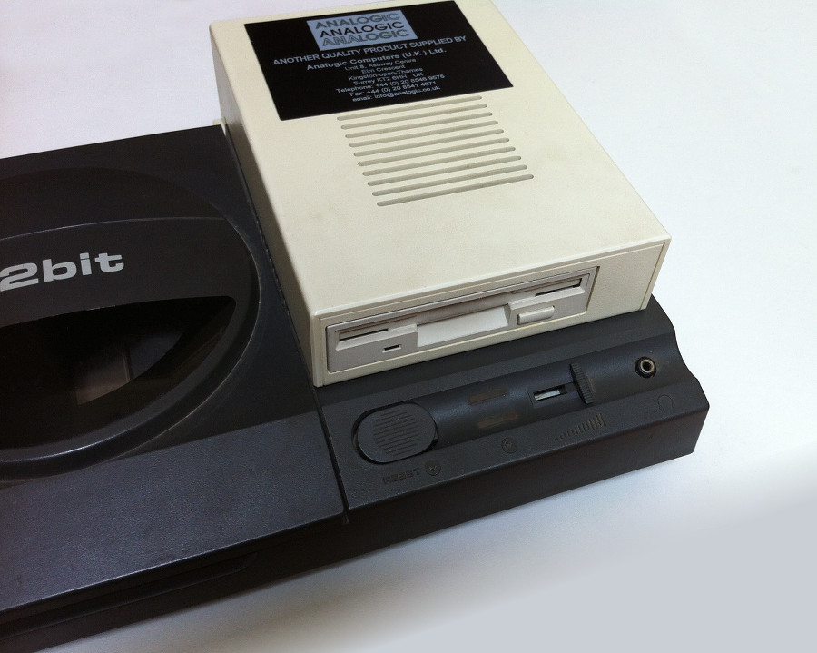
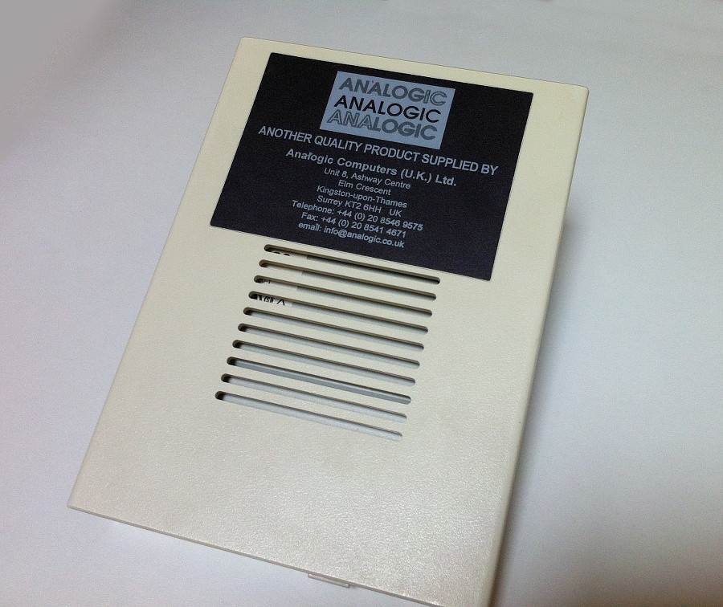
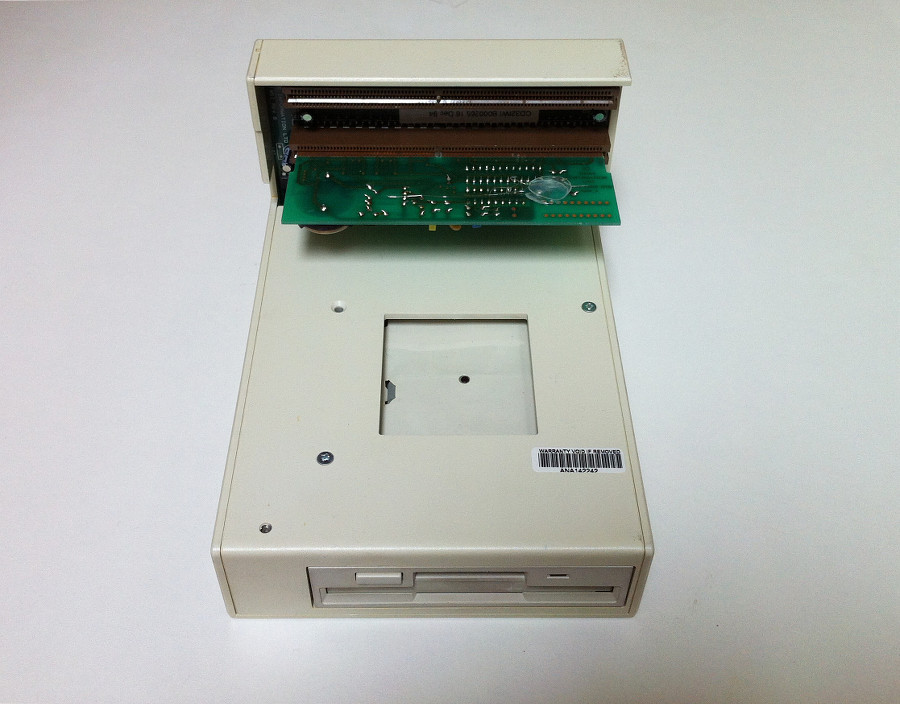
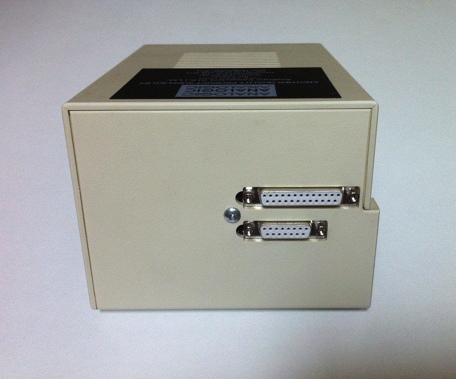
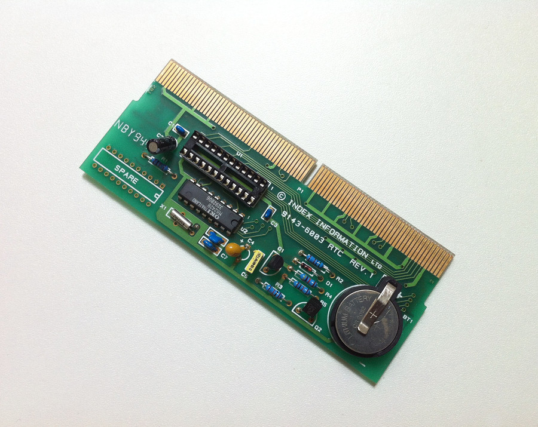
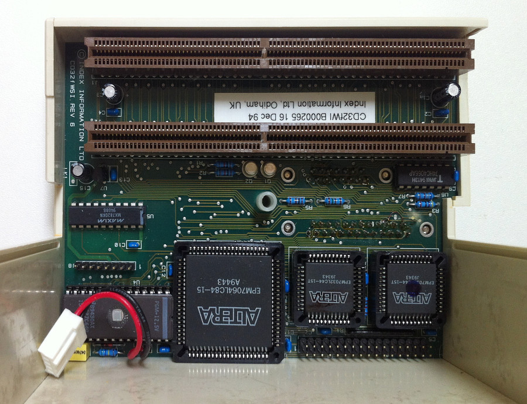

Amiga CD32 Floppy fWSI
Dieses Floppy-Laufwerk wurde für eine Sprachschule (Wall Street Institute) entwickelt damit die Schüler die eigenen Daten auf Diskette abspeichern können. Das Laufwerk wird in den Expansionsport des CD32 eingesteckt und erweitert den Computer um ein Floppy-Laufwerk, eine parallele Schnittstelle, einen 15poligen RGB Ausgang und eine akkugepufferte Uhr.
Zum Eintrag